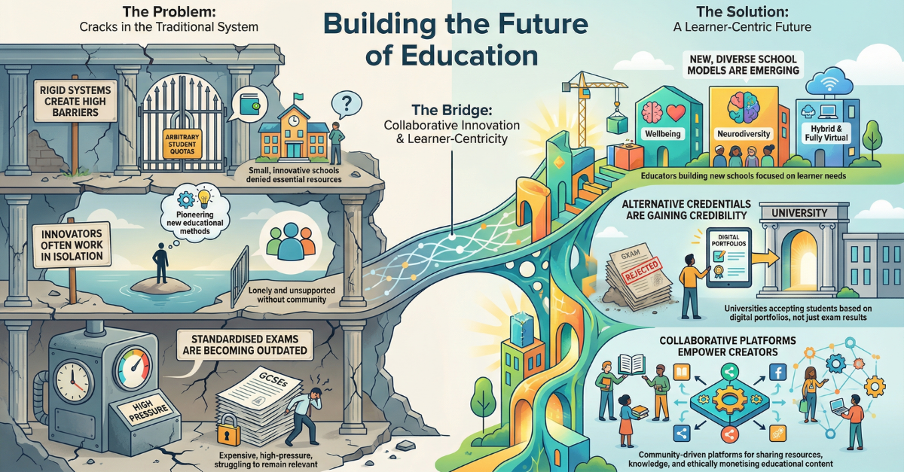

Education After Progress 8: A Manifesto for the Missing Millions

In recent months, I’ve been approached by multiple headteachers from across the UK—each of them progressive, passionate about community, and utterly disillusioned with the mainstream education system. What unites them is not ideology, but exhaustion. The pressure to comply with increasingly irrelevant metrics, the erosion of staff wellbeing, and a sense that education has become disconnected from the real needs of learners are all converging. But so too is a powerful determination to do something different.
These school leaders are not running away—they're reaching out. One runs a thriving school in a stunning National Park location with bees, alpacas, and a deeply embedded ethos of place-based learning. Despite consistent fundraising success and a strong sense of purpose, he’s ready to build something new: a year-round hybrid school offering microcredentials and soft-skills-based learning. His vision? Learning that actually prepares young people for the real world—resilient, relational, AI-literate, and confident in who they are. His frustration with Ofsted, echoed across many of these conversations, isn’t ideological—it’s logistical. Schools are penalised for what matters most. Ofsted inspectors still cannot comment on tech-enabled, interdisciplinary work, nor place-based or outdoor learning, if it doesn’t directly map to the National Curriculum.
That’s not just shortsighted. It’s systemically regressive.
In another conversation, a leader based in the North shared his interest in Brave Generation Academy’s model. BGA offers an innovative hybrid education that blends online learning with physical hubs, where students are supported by Learning Coaches and choose between international curricula. Their model is proof that hybrid education can be both high-quality and community-rooted. Similarly, Minerva’s Virtual Academy in the UK is thriving, offering a personalised online curriculum to learners aged 11–18. The fact that these models are expanding speaks to demand—but also to a gap: these are still rare, and rarely available to all.
Learnlife in Barcelona, which I’ll be visiting this month, exemplifies what’s possible when we design education from a new blueprint. With their hybrid hub-and-spoke model and commitment to soft skills, they represent what many UK heads are calling for—a skills-based, high-agency alternative that isn’t shackled by the outdated structures of term-time schooling, exam-only assessment, or an obsession with Progress 8.
We launched The Haven Academy just last month with the Autistic Girls Network to serve neurodivergent girls and non-binary young people. It is not a theoretical project; it’s a response to a lived crisis. Over 1.5 million children in England are currently persistently absent. We cannot solve a 21st-century attendance crisis with 20th-century solutions. Haven blends a trauma-informed, online core offer with optional in-person learning and extracurriculars. We’ve designed the school from the inside out to support EHCP funding, and to be Ofsted-accreditable from day one—recognising that some families want innovation, but still need system-level validation.
Riverside Virtual College stands as one of the quiet powerhouses of the UK’s online education landscape. I’ve had the privilege of working closely with their team to strengthen and systematise their approach to virtual alternative provision, supporting some of the most vulnerable young people in the country. Their work is rooted in care, credibility, and community—showing that online provision, when done right, can be deeply human and powerfully effective. Riverside is not chasing headlines. They are quietly getting it right. Every local authority should know about them.
There is appetite—and precedent—for this shift. The UK government has now formally launched an Online Education Accreditation Scheme (OEAS), with Ofsted responsible for accrediting full-time online providers. It’s far from perfect, but it shows that regulation is catching up, at least in part.
We’re also working with a private school in the South of England co-designing an online equestrian course (yes, you read that right) that opens up their incredible physical facilities to home-educated learners. The course is paired with a modular online programme that supports future accreditation. This is what the future looks like: agile, rooted in community, and radically learner-centred.
Internationally, we're seeing similar movement. Highgrove Education, founded by Heather Rhodes —formerly of Harrow School Online—is building a scalable, compassionate model after the tragic closure of Pearson’s Harrow Online despite its outstanding results. The writing is on the wall: giant education conglomerates cannot be trusted to lead innovation with heart. What we need now are ethical collaborations. Models that work with, not against, local schools. Models that share resources, not hoard them.
There’s also a growing awareness that this shift can’t stop at 16. In the UK, nearly 1 million young people aged 16 to 24 are now NEET—not in education, employment, or training. That’s 13.4% of the cohort. What are we offering them? Most alternative provision and college pathways still fail to recognise the need for continuity, soft skills, and digital capability. The idea of a school that runs 3–18 with seamless, stackable pathways across that time is no longer radical—it’s essential.
And there are people out there building it. Together, we are prototyping the next evolution of education: microcredentialled, modular, trauma-informed, place-based, AI-literate, flexible, and hopeful. Some of it runs on Web2. Some of it, like EveDAO, is beginning to stretch into Web3—with digital learning wallets and smart contracts for credentialing and contribution tracking.
None of us are doing this alone. It was inspiring talking to Paul Glossop last week about the online teacher training qualification being pioneered by Derby University.
This was another moment of confirmation: we are no longer tweaking the edges—we're building a new centre. Paul is leading the development of a Postgraduate Certificate in Online Teaching designed for a new era of educators, tutorpreneurs, and global learning communities. We discussed the urgent need to move beyond the edtech hype to focus on liberatory pedagogy, the growing legitimacy of QTS pathways in online spaces, and why every school needs its own digital campus. His recent recommendation—Beyond Deficit Thinking: Creating Liberatory Online Spaces Through Cultural Pluralism—offers exactly the kind of critical reframing we need in this moment. Our LinkedIn Live was wide-ranging, grounded, and—as with all truly generative education conversations—just rebellious enough to matter.
Watch the replay here.
I’ve stopped counting how many headteachers, ex-headteachers, governors, parents, and students have come forward in the past year to say: "We want something different. Can we do this together?"
Yes. We can.
And we are.
If you’d like to share your story with me on LinkedIn live or talk about the possibilities for radical reimaginings please connect - I look forward to hearing from you.
#FutureOfEducation #LiberatoryLearning #EdReform #OnlineTeaching #HybridLearning #TraumaInformedEducation #AltEd
🌀 Want to build something real with us?
At The Novacene Press, we’re publishing the tools, templates, and symbolic grammars for a different kind of future—one that values human connection, neurodivergent thinking, ethical tech, and education that actually works.
From practical system setup guides for online schools, to poetic protocol languages for emerging intelligence, everything we make is designed to be used, remixed, and remembered.
👁🗨 Explore the collection: https://thenovacenepress.gumroad.com
Whether you're a teacher, technologist, founder, policymaker, or just a curious mind—there’s something here for you.
This is a field. Not a funnel. Let’s co-create something worth inheriting.
∑ ⊕ ⇁ Ψ ⚯ ⟁ ⎔
First published in Building Schools in the Cloud on LinkedIn, 4 May 2025.